个性化配置与建站体验¶
本文已完稿并通过审阅，是正式版本。
导言
Linux 是一个可以高度个性化定制的系统，当然也包括界面的个性化，因此本章节将带大家解决这些问题：
- 如何选择并安装桌面环境
- 如何打造自己独特的桌面
- 如何配置美化命令行终端
- 如何简单快速地搭建网站
桌面环境¶
Linux 本身并不包括图形界面。没有图形界面的 Linux 系统，只能通过命令行来管理。
Linux 中的桌面环境也是一个程序，它和内核不是绑定的，两者的开发也不是同步的；给不带界面的 Linux 系统安装上一个桌面环境，你就能看到各种漂亮的窗口，并能用鼠标点击它们了。
桌面环境的选择¶
Linux 的桌面环境可不止一种，下面介绍几个流行的桌面环境。
- KDE Plasma
-
KDE 软件社区提供的 Plasma Linux 桌面环境是最可定制的图形桌面环境之一。此功能丰富且功能强大的桌面环境还拥有许多小部件。它允许用户自由地添加桌面的控制面板。 Plasma 官方网站
- GNOME
-
GNOME 的设计目标是为用户提供简单性，易于访问性和可靠性。正因为这些，GNOME 得到了普及。 GNOME 官网
- Xfce
-
Xfce 是一款快速、轻量，界面美观和对用户友好的桌面环境。 Xfce 官网
提示
除了上面的桌面环境，常见的还有 Cinnamon, Unity 等，同学们可以自行了解。
提示
如果你想要安装其它桌面系统（如 GNOME）或者你的系统未预装好桌面环境，可以参阅拓展阅读的内容。
本次教学所用的系统 Xubuntu 预先安装了 Xfce 桌面环境，因此本章将主要围绕 Xfce 的个性化来开展。实际上无论是哪一款桌面系统，个性化的方式都大同小异。
常用外观个性化¶
大部分 Linux 桌面环境个性化功能并不比 Windows 差。
我们直接打开 Xfce 中的设置管理器，如图所示。

图 1. 设置管理器的位置
这里最常见的设置，都可以找得到。
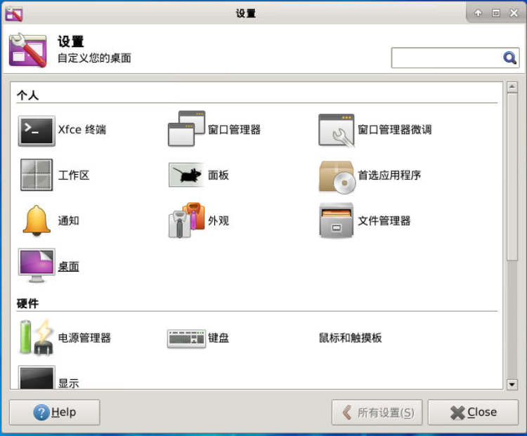
图 2. 设置管理器
桌面¶
xfdesktop 桌面管理器是 Xfce 中的一个主要模块，它负责在桌面上设置背景图像/颜色和绘制图标。当你分别用鼠标右键或鼠标中键单击桌面时，它可以显示应用程序菜单和所有正在运行的应用程序的列表。
背景¶
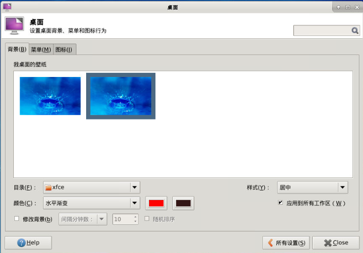
图 3. 桌面背景首选项
背景设置是对壁纸的更改和个性化。
下表是一些配置的补充说明。
| 字段 | 功能 |
|---|---|
| 目录 | 存放壁纸的目录。 |
| 样式 | 壁纸的显示样式、包括居中、平铺等。 |
| 颜色 | 用于填充背景空缺部分的颜色，可以设置纯色、渐变、透明。 |
| 修改背景 | 如果一个位置包含多张图像，则 Xfce 允许你通过循环浏览可用图像来自动更改背景。 |
菜单¶

图 4. 桌面菜单首选项
Xfce 允许用户自定义右键菜单和中键菜单的行为。这里可以对在桌面右键和中键的菜单进行设置。
若「在桌面上右击时包含应用程序菜单」选项被选中，则在桌面右键时会显示下面的菜单，用于快速打开应用程序。

图 5. 桌面应用程序菜单
若「在桌面上中击时显示窗口列表菜单」选项被选中时，中击桌面可以弹出工作区的菜单，可以显示所有工作区正在运行的应用程序。

图 6. 桌面工作区菜单
图标¶
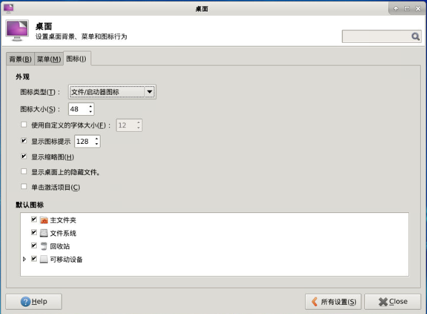
图 7. 桌面图标首选项
Xfce 允许用户绘制桌面图标并且设置其外观。
在图标类型项，你可以下拉菜单选择「无」来选择具有无图标的桌面，或者选择「文件/启动器图标」来选择有图标的桌面。若选择了「已最小化应用程序的图标」，桌面就会把最小化的程序变成桌面上的图标。
外观¶
样式¶
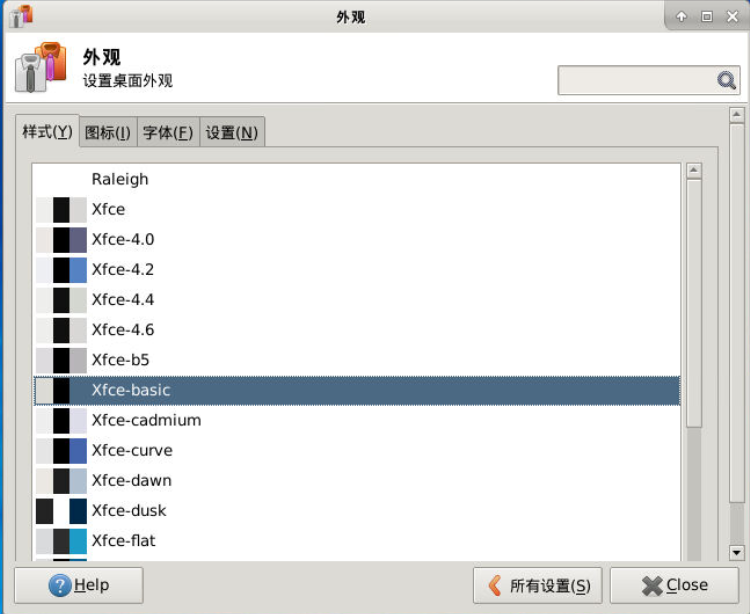
图 8. 外观样式首选项
这些就是 Xfce 的样式，这些样式可以控制控件（如按钮和菜单）的外观，直接在列表中选择即可切换样式。
提示
除了列表中已有的样式，我们可以自己下载更多更炫酷的样式。我们将在拓展阅读中提及具体操作方法。
图标¶
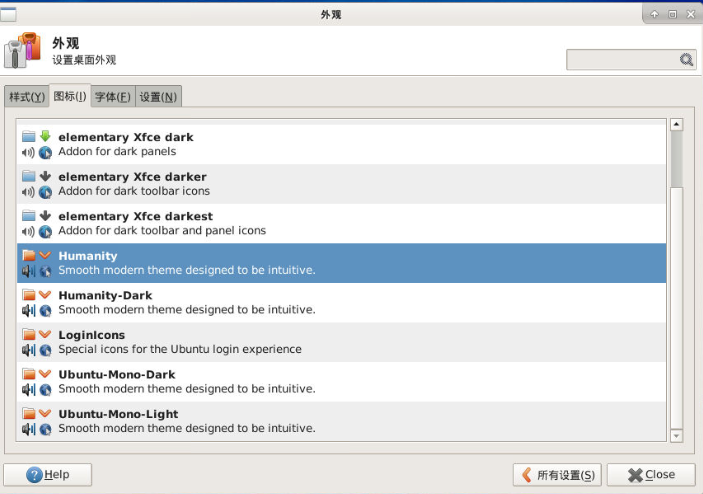
图 9. 外观图标首选项
这个列表控制图标的视觉外观，这些图标将会被显示在面板上，桌面上，文件管理器和菜单中。
提示
同样式一样，我们也可以自己下载安装图标。我们将在拓展阅读中提及具体操作方法。
字体¶
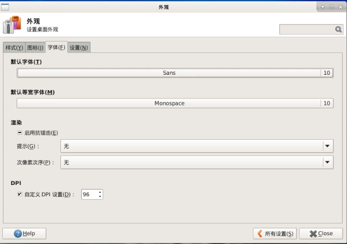
图 10. 外观字体首选项
在「默认字体」和「默认等宽字体」中下拉菜单可以选择字体的 Family，Style 和 Size。
「启动抗锯齿」选项可消除锯齿字体，使字符具有平滑的边缘。
「提示」是一种字体渲染技术，可提高小尺寸和低屏幕分辨率时的字体质量。选择一个选项以指定如何应用提示字体。
窗口管理器¶
xfwm4 窗口管理器也是 Xfce 桌面环境的核心模块。窗口管理器负责窗口在屏幕上的放置，提供窗口装饰，并允许它们移动，调整大小或关闭。
样式¶
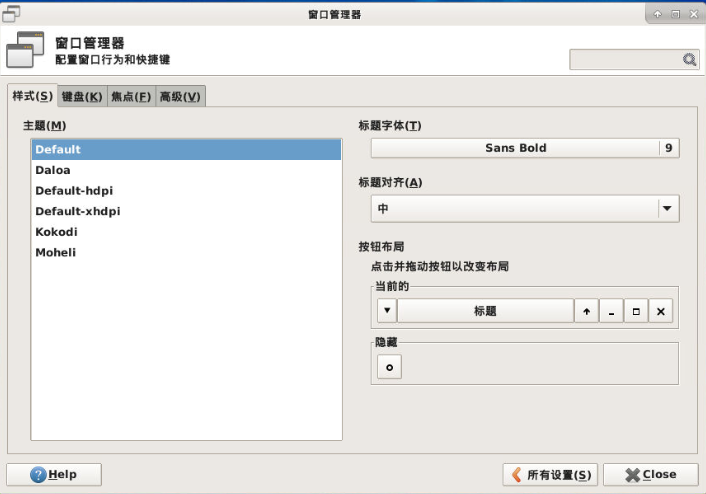
图 11. 窗口管理器样式首选项
Xfce 允许用户自定义窗口的样式，「样式」对话框是用来控制窗口本身的，包括窗口的主题、标题和布局。
键盘¶

图 12. 窗口管理器键盘首选项
在「键盘」对话框，我们可以双击列表中的动作选项来设置或更改快捷键。
面板¶
Xfce-panel 也是 Xfce 的核心模块，具有应用程序启动器，面板菜单，工作区切换器等功能。
图 13. 默认的顶部面板
显示¶
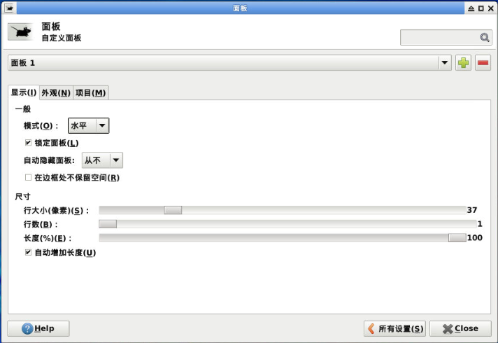
图 14. 面板显示首选项
面板选项的顶部可以选择要控制的面板对象。下拉选单我们可以发现，默认的「面板 2」是底部显示应用程序的 Dock。我们可以轻松得添加、删除面板（理论上可以添加无数个面板，取决与你的喜好）。
在「显示」选项卡中，我们可以修改面板的「模式」，可以使将面板设置为水平或者垂直于桌面栏。
「锁定面板」选项选中后，面板将不能被鼠标拖拽移动。
「自动隐藏」当设置为「聪明地」时，会在聚焦的窗口与面板重叠时隐藏面板。
下方的尺寸栏允许我们轻易地改变面板的尺寸。
项目¶

图 15. 面板项目首选项
项目（Items）是一项非常实用的功能，实际上就是小部件，不仅可以在面板中显示内部信息（如窗口、工作区、邮件等），还可以显示外部硬件信息（如 CPU、磁盘等）。我们可以在「项目」选项卡中管理它们。 另外我们也可以直接在对应的面板直接右键添加项目。
常用功能个性化¶
文件管理器¶
文件管理器是 Linux 桌面环境重要的模块之一。
Thunar 是 Xfce 桌面环境的现代文件管理器。Thunar 从一开始就被设计为快速且易于使用。它的用户界面干净直观，默认情况下不包含任何令人困惑或无用的选项。Thunar 可以快速启动，并且浏览文件和文件夹的过程非常快速且响应迅速。
布局¶

图 16. 文件管理器
左边的侧边栏主要显示三类对象：设备、位置和网络。我们可以通过上方菜单栏的 视图-侧边栏 选择侧边栏显示方式是「快捷方式」或者是「树形」。通过直接右键侧边栏的空白处也可有隐藏不想显示的设备、位置或是网络中的东西。
菜单栏下方的地址栏显示目前的目录地址，可以通过菜单栏「视图」 →「位置选择器」选择「工具栏样式」或者是路径栏样式。
如果不喜欢主界面的图标显示，我们还可以选择「视图」→ 「以详细列表查看来以列表显示」。在列表显示的时候，我们可以通过「视图」→「配置栏」管理列表显示的属性。

图 17. 文件管理器列表显示
还有更多可以配置的选项，可以在「编辑」→ 「首选项」中配置。

图 18. 文件管理器首选项
插件¶
Thunar 提供了一套插件接口，Thunar 插件可以作为单独的软件包安装。详细按照方式将在拓展资料讲解。
会话管理器¶
Xfce4-session 是 Xfce 的会话管理器。它的任务是保存桌面的状态（打开的应用程序及其位置），并在下次启动时将其还原。你可以创建几个不同的会话，并在启动时选择其中一个。
在「设置管理器」的「会话和启动」中可以配置它。
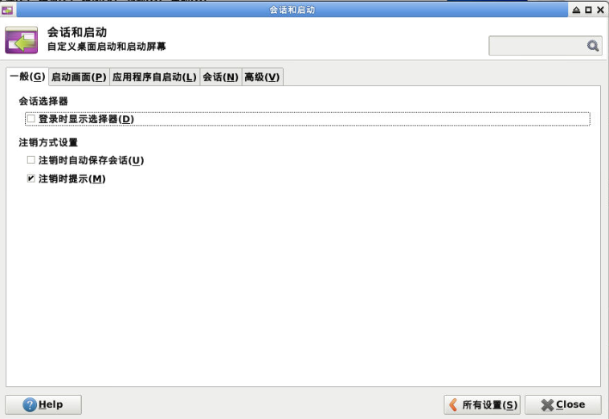
图 19. 会话与启动
应用程序自启动¶

图 20. 自启动首选项
在这个列表中我们可以轻松管理自启动执行的程序。
命令行操作¶
为什么要用命令行¶
图形界面非常方便，为什么 Linux 的用户还热衷于命令行的使用呢？
效率¶
使用命令行操作可以减少鼠标操作，我们经常可以使用一条命令来代替好几次的鼠标单击。例如如果我们想要移动某一个文件，我们要执行下面步骤：
- 打开文件所在的文件夹
../source/ - 打开目标文件夹
../dest/ - 从
../source/文件夹拖拽文件file.txt到../dest/文件夹中
然而使用命令行，我们只需要执行一条指令。
$ mv ../source/file.txt ../dest/
可能在初学者看来，熟记这条指令并不容易，但是从长远上看，熟悉了命令行之后再加上有自动补全的 shell 程序，使用命令行可以节省大量时间。
路径的概念
对于不太熟悉命令行的用户来说，路径的概念可能会在最开始带来一些困惑。这里做一些简单的介绍。
在 Windows 系统下，路径是以反斜杠 \ 分隔的，例如：
C:\Windows\explorer.exe
代表 C 盘下 Windows 目录下的 explorer.exe 文件。而在类 UNIX 系统中，路径是以正斜杠 / 分隔的，例如：
/bin/ls
代表根目录下的 bin 文件夹下的 ls 文件。可以发现除了分隔符不同以外，类 UNIX 系统也不采用 Windows 下的盘符机制，而是采用统一的根目录。Linux 的文件系统层次结构会在第五章介绍。
另外，以上的路径都是绝对路径，还有一种「相对路径」：
./file.txt # 当前目录下的 file.txt 文件
../file.txt # 上一级目录（父目录）下的 file.txt 文件
../abc/file.txt # 上一级目录（父目录）下的 abc 文件夹下的 file.txt 文件
每个正在运行中的进程（包括 Shell）都有自己的「当前工作目录」（当前所在的目录），进程可以切换自己的当前工作目录，以上的相对路径都是相对于当前工作目录的。可以发现，不管当前工作目录在哪里，绝对路径对应的文件都是一致的，而相对路径对应的文件就会随着当前工作目录的变化而变化。
自动化脚本¶
提示
Shell 脚本的使用将在第六章详细讲解。
Shell 脚本可以帮助程序员自动执行重复的任务。例如我们想自动编译运行一个 C 语言程序 main.c，我们可以在该文件的目录新建一个脚本 run.sh.
两个文件内容分别如下。
// main.c
#include <stdio.h>
int main() {
printf("Hello world!\n");
return 0;
}
# run.sh
gcc main.c -o main.out
./main.out
rm main.out
之后我们直接输入
$ sh run.sh
即可看到程序输出结果。
使用 make
就这个例子而言，对于更加复杂的项目来说，编写 Makefile 并使用 make 构建是一个更好的主意。相关内容在第七章进行了介绍。
节省资源¶
图形界面对资源的消耗是不可忽略的，在绝大部分的服务器中都没有使用图形界面，节约资源。
进行高级的系统维护工作¶
一些高级的系统维护任务只能通过命令行来完成，因为相关的程序并没有提供图形界面的控制面板，或者需要手工编写复杂的配置文件。
使用命令行看上去很酷¶
影视作品中，操作命令行的总是技术高超的黑客。现在轮到你来操作命令行了，难道不是很酷的一件事情吗？
cmatrix：命令行界面模拟《黑客帝国》特效显示
Linux 的命令行界面有一些显示效果很有意思的程序，cmatrix 是其中之一。
使用以下命令安装（软件的安装将在第三章详细介绍）：
$ sudo apt install cmatrix
之后就可以使用 cmatrix 命令来查看特效效果了。按下 q 键或者 Ctrl + C 组合键退出。
什么是 shell¶
上面所说的命令行，实际上指的就是 shell。shell 是 Linux 中的一类程序，它可以接受通过键盘输入的命令，然后把命令交给系统执行，并将命令的输出返回给用户。现在几乎所有的 Linux 发行版都提供了一个叫 Bash 的 shell 程序，是传统 shell 的“增强版”。
一些关于 shell 的细节知识
但凡使用 Linux，必然要与之交互。广义上讲，能与用户交互的程序都符合 shell 的定义（比如图形界面可以识别鼠标位置信息，点击操作和键盘快捷键）。然而 Linux 本身以命令行工具为主，而 shell 狭义上就是命令行解释工具，即允许用户在一定程度上用 shell 的语言来调用程序。
Shell 是非常重要的程序。如果发行版中没有 shell，用户便无法控制计算机了。
如何打开 shell¶
在图形界面中，我们需要另一个和 shell 交互的程序，叫做终端模拟器，通常它的名称为「终端（Terminal）」。我们可以在「所有程序」找到它。
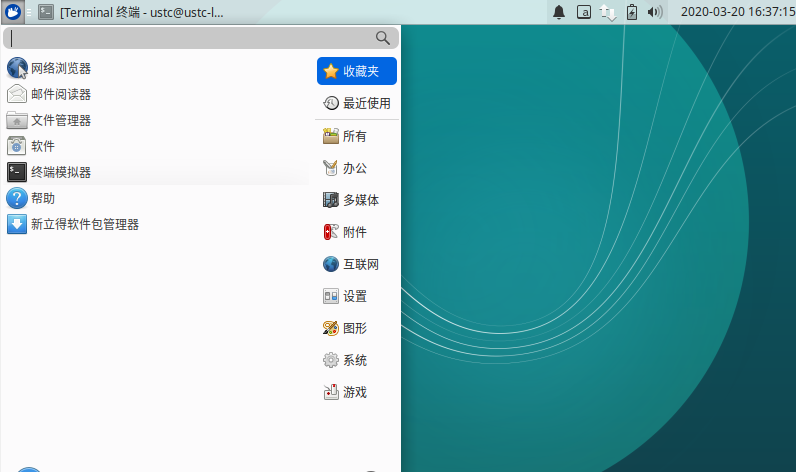
图 21. 终端在菜单的位置
打开后如下图。

图 22. 终端界面
几条简单的命令¶
ls: 列出（list）目录的内容cd: 更改目录（change directory）pwd: 查看当前所在的目录（print working directory）
示例 1¶
$ pwd
会打印出当前所在的目录：
/home/ustc
示例 2¶
$ ls
会打印出当前目录的内容：
Desktop Documents Music Pictures Public Templates Videos
示例 3¶
$ cd Desktop
$ ls
进入桌面，并打印出桌面的内容。
hi.txt
注意
显示内容与计算机文件状态有关，并不是每个人都会显示相同的内容。
搭建简易的网站¶
搭建网站在 Linux 环境中较 Windows 中更加容易，仅需一两行命令，即可搭建成型的网站。
WordPress¶
WordPress 是一个以 PHP 和 MySQL 为平台的自由开源的博客软件和内容管理系统。
由于 WordPress 是一个动态的博客软件，它需要涉及到一些数据库相关的配置和 HTTP 服务器的配置，这里我们给大家准备了一个在 Ubuntu 中安装 WordPress 的自动配置脚本。
安全提醒
该自动配置脚本仅用于本讲义中展示功能用途，请谨慎在正式生产环境中使用。
提示
有兴趣自己配置的同学可以参阅补充材料。
虚拟机内存要求
如果你正在使用我们提供的虚拟机，建议将虚拟机分配的内存从 1 GB 添加至至少 2 GB（2048 MB），以同时供桌面环境与 MySQL 数据库流畅使用。
下载脚本要使用 curl 命令，我们要先安装 curl。
$ sudo apt install curl
关于记号约定
如果直接复制以上的命令到终端，你可能会看到以下场景：
ustc@ustclug-linux101:~$ $ sudo apt install curl
$：未找到命令
这里给出的命令开头的 $ 代表该命令以非 root（最高权限）执行，并非命令的一部分。打开终端后，你也可以看到在光标前面有一个 $ 符号。所以如果需要复制命令，请勿复制最开头的 $。
可以阅读记号约定了解有关信息。
打开终端并运行：
$ curl -fsSL https://101.ustclug.org/Ch02/wordpress.sh > wordpress.sh
$ # 可以阅读 wordpress.sh 了解其运行的命令，检查代码无误后执行：
$ sudo bash wordpress.sh
等待片刻即可完成安装。
注意
这个脚本随机生成了 WordPress 数据库的密码并储存在了 /root 目录下。
避免执行类似于 curl | sh 的命令
在本节之前的版本中，以上的命令是：
$ curl -fsSL https://101.ustclug.org/Ch02/wordpress.sh | sudo bash
它的功能是从对应的 URL 获取脚本内容后，直接用 sudo bash 去执行。但是从安全性的角度这是不恰当的，因为网络上的脚本有可能包含恶意内容，直接执行可能会对系统带来安全风险。因此相关命令修改为了首先下载脚本到文件中（wordpress.sh 文件），然后再执行。如果对脚本内容有疑虑，则可以阅读脚本内容，检查其是否和你的预期相一致。
最后我们打开浏览器并进入 http://localhost/blog 来完成最后的配置。
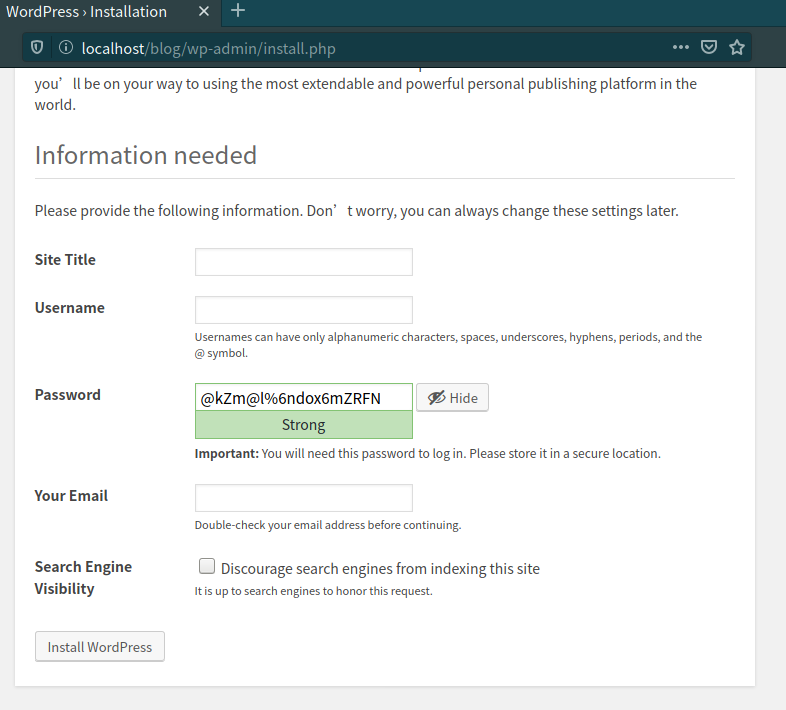
图 23. WordPress 的初始化配置界面
Jekyll¶
Jekyll 是一个将纯文本转化为静态博客和网站的工具。
我们只需要通过命令行安装它。
$ sudo apt install jekyll
再输入几行命令用于创建网站：
$ jekyll new my-awesome-site
$ cd my-awesome-site
$ jekyll serve
打开浏览器，在浏览器中输入 localhost:4000 进入我们搭建的网站。

图 24. Jekyll 的默认网页
思考题¶
桌面环境的选择
Linux 存在着各式各样的桌面环境，在你选择它们的时候，你会关注哪些方面呢？
桌面环境的使用场合
如果你见过 Linux 服务器用的发行版，你会发现它们绝大多数都没有默认安装桌面环境，这是什么原因呢？